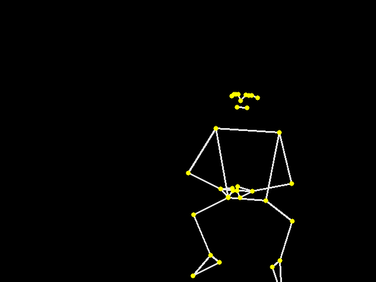
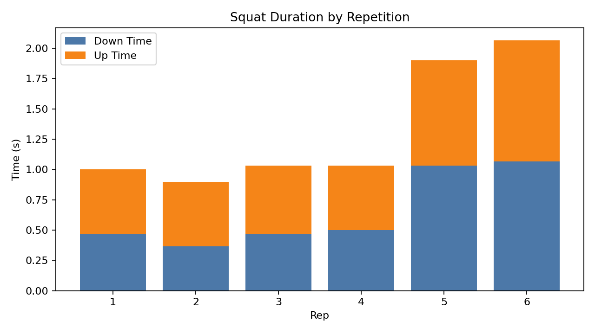

CS5330 · Computer Vision
From movement to measurable feedback
I built a real-time system that detects body landmarks, draws a skeleton and joint trajectories, and summarizes squat repetitions from video.

How it works
-
Detect pose
MediaPipe Pose estimates 33 body landmarks in each frame.
-
Track movement
The system draws the skeleton and traces hip, knee, and ankle motion.
-
Analyze squats
Rules based on knee angle and hip height identify repetitions and measure timing, depth, and consistency.
One test session
In a recorded session, the system detected six squats. The final two were intentionally slower, and the timing chart captured that change.
Rep 1: 0.467 s down · 0.533 s up · 1.000 s total · 0.862 consistency

This is a single-session case study, not a general accuracy benchmark. The consistency score is relative to this project, and rule-based measurements can change with camera angle, occlusion, or noisy landmarks.